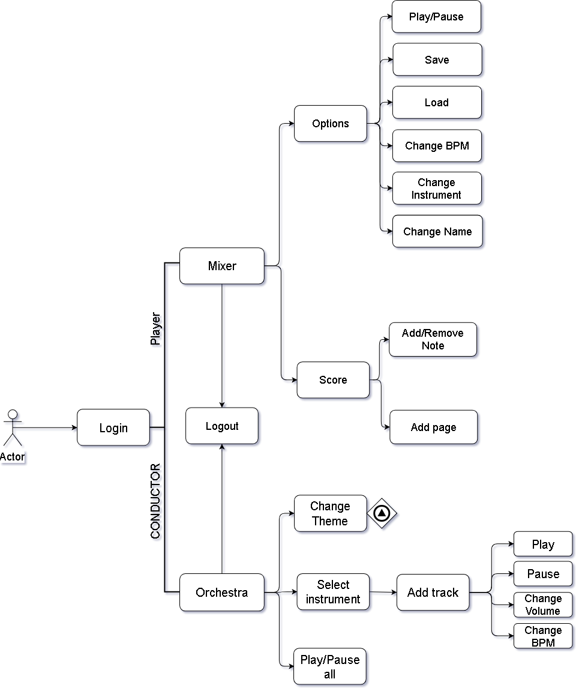

Faculty of computer science,
"Alexandru Ioan Cuza" University of Iași
—
Iași,
Iași,
România
Concepts
HTML
HTML
, by
TimBerners-Lee; published in
(accessed on
)
.
Hypertext Markup Language (HTML) is the standard markup language for creating web pages and web applications. With Cascading Style Sheets (CSS) and JavaScript, it forms a triad of cornerstone technologies for the World Wide Web
CSS
CSS
, by
HåkonWium-Lie; first proposed in
(accessed on
)
.
Cascading Style Sheets (CSS) is a style sheet language used for describing the presentation of a document written in a markup language like HTML. CSS is a cornerstone technology of the World Wide Web, alongside HTML and JavaScript.
JavaScript
JS
, by
National Center for Supercomputing Applications,
University of Illinois at Urbana-Champaign
—
Urbana and Champaign,
Illinois,
U.S.; published in
(accessed on
)
.
JavaScript, often abbreviated as JS, is a high-level, interpreted programming language. It is a language which is also characterized as dynamic, weakly typed, prototype-based and multi-paradigm. Alongside HTML and CSS, JavaScript is one of the three core technologies of the World Wide Web.
GitHub
GitHub
, by
GitHub Inc.,
Microsoft Corporation
—
San Francisco,
California,
U.S.; started in
(accessed on
)
.
GitHub Inc. is a web-based hosting service for version control using Git. It is mostly used for computer code. It offers all of the distributed version control and source code management (SCM) functionality of Git as well as adding its own features. It provides access control and several collaboration features such as bug tracking, feature requests, task management, and wikis for every project.
Our implementation using these concepts
First steps
Down here you can see a sketche we made before starting to work.
Sketch for how the alerts should be previewed
For code management we chose Git and the tool we used GitHub
Now some sneaky peaks inside our code
Index page only with navigator menuHere is some of the css responsible with the responsiveness of the navigatorAnd the javascript functions which is behind the menu
Final product
Users will be able to login/register with or without facebook(quick method).
And the ultimate goal for this project is to develop an application in which the users can easily compose their own music and mix it with other songs.
Mixer PageDirijor Page
Project Structure
A basic flowchart of our application

Application flowchart
Login
Login diagram
Database
Database diagram
There will be 2 tables:
Users: composer, orchestra master
Songs: 2 possible representations (as a "song" / as notes project - unprocessed audio )
UML
UML Diagram
UML in detail
Mixer component
💨 It keeps a list of user's scores and a list of instruments from which the user can select
Methods:
✔ AddScore() ➡ extends the scores with 8 note columns
✔ Play() ➡ renders current state of the project and plays it
✔ Pause() ➡ pauses playing
✔ changeBpm() ➡ changes the BPM for each note
✔ Save(String songName, String instrumentName) ➡ saves the state of the project to the database and renders the song so that it can be loaded in the orchestra
✔ Load(String songName) ➡ takes the project state of the selected song from database
✔ ChangeName(String name) ➡ changes song name
✔ ChangeInstrument(String instrumentName) ➡ changes the notes according to the instrument
Score component
💨 Keeps a representation of each note, repeated 8 times
Methods:
✔ Add() ➡ event firing note selection
✔ Remove() ➡ event firing note deselection
Orchestra component
💨 It keeps a list of user selected tracks for playing together
Methods:
✔ AddTrack(String trackName) ➡ adds new track to the list
✔ RemoveTrack(trackName) ➡ removes track from the list
✔ PlayAll()/PauseAll() ➡ plays/pauses the orchestra (all tracks simultaneously
✔ Play(trackName)/Pause(trackName) ➡ plays/pauses the preview of a track
✔ changeBpm() ➡ changes the volume at which the track plays
✔ changeVolume(trackName) ➡ changes the volume at which the track plays
✔ changeTheme(trackName) ➡ changes the theme of the application (these could be a service for the whole app)
Track component
✔ Audio "object"/ render result after Save() from the mixer
TrackList component
💨 It keeps a list of all available tracks from the instrument list
Methods:
✔ ChangeInstrument(instrumentName) ➡ when the user chooses another insturment it fires an event which changes the list of tracks visible
Patterns used
👀 IIFE ➡ immediately invoked functions used for models creating
Mostly, them will create our components where needed. Examples:
✔ createTrackList()
✔ createCard()
👀 Observer ➡ observes the modifications of tracks (new track saved, existing track edited, deleting track) and notifies TrackList
👀 Module Pattern ➡ for Score component and any other only function editable component
Storage
👀 Cloud ➡ Microsoft Azure, NoSQL
👀 localStorage/sessionStorage ➡ keeps the state of the currently produced song in mixer